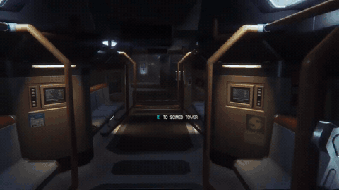
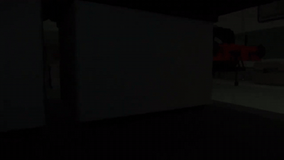
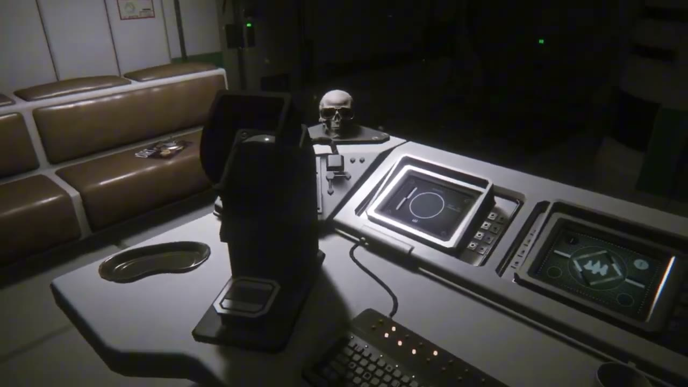

Alien: Isolation review: survival horror, but the Alien is Thomas the Tank Engine

Alien: Isolation puts me on Sevastopol, a decommissioned trading station, as Amanda Ripley, fifteen years after the events of Alien, looking for what happened to my mother. Creative Assembly made it and SEGA published it. The Alien hunts by its senses, so hiding matters.
In Part 3, after a last episode where the Alien barely showed up, I played with a mod that swaps the Alien for Thomas the Tank Engine: a blue train with a face and rolling wheels that chugs and whistles next to the alien screeches. The mod only swaps the model and the sounds, and the hunting is still the game's own. My revolver had two bullets, and shooting androids did nothing, and the Alien killed me in a dark corridor. At a save phone I shot an android to bait Thomas and said, "The thing just wants to eat me and nobody else." Then I hid in a locker. Thomas killed me in a transit car, in a floor vent and in a hallway, and in the hallway I shot it several times first and died anyway.

I died to Thomas and to a motionless android. Once I ran downstairs straight into Thomas because my W key was stuck, on my own keyboard. Hiding under a desk while its wheels rolled right past worked twice, and reaching the last save phone felt like a touchdown.

The hiding works even when the monster is a train, but not everywhere. Thomas got me in lockers and in a vent, while desks and a gurney kept me alive. What annoyed me was the motionless android that grabbed my leg and killed me, and a glitch in the game that had Ripley bracing against a door that was not there. Watch below to see a blue train run me over.